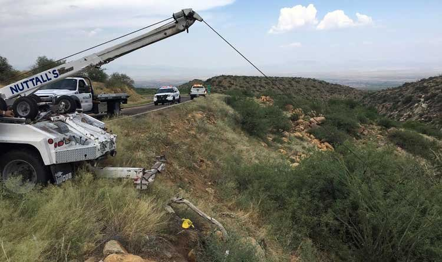

Cars
Sedans, SUVs and everyday drivers that won’t start or can’t be driven.
Towing 24/7 · Office Mon–Sat
From cars and trucks to mopeds and all-terrain vehicles, Nuttall’s Towing can tow almost any vehicle in Safford and the surrounding areas. Emergency road service, 24 hours a day.

Sedans, SUVs and everyday drivers that won’t start or can’t be driven.
Pickups and work trucks, on the bed or on the boom.
Two-wheelers hauled home or to the shop, including after a wreck on the highway.
Side-by-sides and four-wheelers brought in from the trail.
Nuttall’s Towing has been serving Safford and the surrounding areas since 1950. It is locally owned and operated, and it runs out of the yard at 304 S 7th Ave, a block north of W 4th Street.
Look for the white trucks with the blue NUTTALL’S lettering on the boom. Whether it is a car that won’t start in town or a vehicle off the side of a mountain highway, one call to 928-428-0825 gets a truck moving, 24 hours a day.
Pull as far off the road as you can, hazards on. Call 928-428-0825, day or night.
Your location (mile marker or cross street) and the vehicle: car, truck, moped or ATV.
A Nuttall’s truck comes out and tows it where it needs to go.
Towing 24/7
| Towing & road service | 24 hours, 7 days |
|---|---|
| Monday | 7:30 AM – 6 PM |
| Tuesday | 7:30 AM – 6 PM |
| Wednesday | 7:30 AM – 6 PM |
| Thursday | 7:30 AM – 6 PM |
| Friday | 7:30 AM – 6 PM |
| Saturday | 8 AM – 12 PM |
| Sunday | Office closed |
Office & gate hours (vehicle pickup). Holiday hours can differ, so call ahead.
304 S 7th Ave
Safford, AZ 85546
Estimates are free. For anything that can wait (a car to the shop, an ATV home from a trip, a non-runner to haul), send the details here. For a breakdown or an accident, don’t type: call.
Emergency? 928-428-0825Yes. Towing and emergency road service run 24/7. The office and the gate keep regular hours: Monday to Friday 7:30 AM to 6 PM and Saturday 8 AM to 12 PM, closed Sunday.
Almost any vehicle, from cars to trucks and from mopeds to all-terrain vehicles. Not sure about yours? Call and describe it.
At the yard, 304 S 7th Ave in Safford, during office and gate hours.
Estimates are free, and credit cards are accepted.